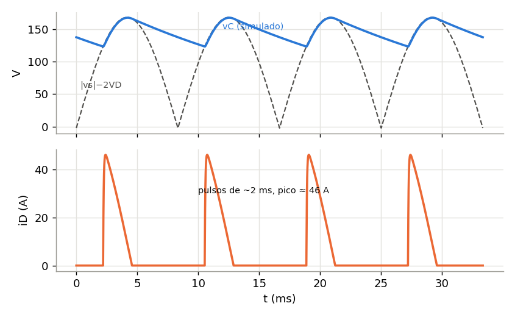
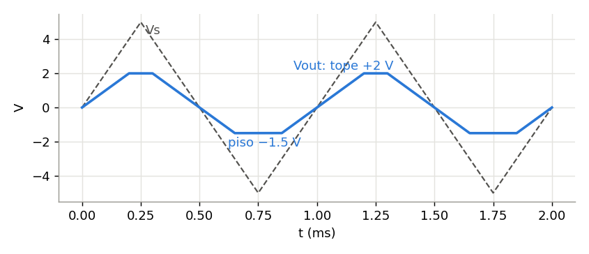
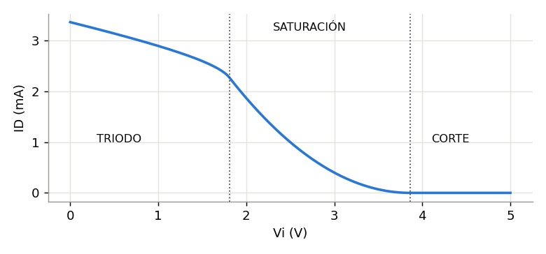

Guía 04 · Predicción del Parcial 1 y problemas resueltos
Basada en 12 parciales de ELC-115 (2013–2025) del Prof. José Ramos López. Todas las respuestas numéricas se verificaron en Python y, donde existe, contra la solución oficial.
1. Cómo se asignaron las probabilidades
Cada probabilidad combina tres factores:
- Frecuencia: en cuántos de los 11 parciales legibles aparece el tema.
- Recencia: los parciales de 2021 a 2025 pesan el doble, porque reflejan el curso actual con el CD4007, LTspice y los cargadores.
- Reciclaje: el profesor reutiliza sus propios problemas cambiando números. Por ejemplo, 2014 P5 volvió como 2024 P4, el 1N5235 antiguo volvió en 2025 P2 y todo 2023 se repitió en el "repetido".
Son estimaciones heurísticas y no una garantía. Solo tenemos la primera hoja del parcial 2025, que probablemente tenía además un rectificador con C y un MOSFET. Úsalas para decidir en qué invertir más horas, no para dejar de estudiar un tema.
2. Frecuencia de cada tema en los parciales
| Tema | '13 | '14 | ~'15 | nota7 | repe | '17 | '21 | '23 | '23R | '24 | '25* | Total |
|---|
| Rectificador con filtro C | ✓ | ✓ | ✓ | ✓ | ✓ | ✓ | ✓ | ✓ | ✓ | ✓ | ? | 10/10 |
| MOSFET en DC | | ✓ | | | | | ✓ | ✓ | ✓ | ✓ | ? | 5; todos desde 2021 |
| Cargador de batería | | | | | | | ✓ | ✓ | ✓ | | ✓ | 4; los 4 más recientes con cargador |
| Recortador o transferencia | ✓ | ✓ | ✓ | | ✓ | ✓ | ✓ | | | ✓ | | 7 |
| Zener (regulador o limitador) | ✓ | ✓ | | ✓ | ✓ | ✓ | ✓ | | | | ✓ | 7 |
| Foco + diodo | | | | | | | | ✓ | ✓ | | | 2 |
| DC con varios diodos | | | | | ✓ | ✓ | | | | | | 2 |
| Sujetador o doblador | | | ✓ | | | | ✓ | | | | | 2 |
| Exponencial, temperatura o pequeña señal | | ✓ | | ✓ | ✓ | | | | | | | 3, todos antiguos |
| Unión pn | | | | | | ✓ | | | | | | 1 |
* Del parcial 2025 solo se conoce la primera hoja. "?" significa que no se sabe.

3. Estructura más probable del Parcial 1 de 2026
| Problema | Contenido probable | Peso |
|---|
| 1 | Circuito con diodos y forma de onda: recortador con triangular, transferencia, o cargador con fuente de corriente | 20–25 % |
| 2 | Rectificador con condensador: Vr con corrección por ΔT, Ipico, potencia o PF, opinión sobre el diodo; o un cargador de batería | 25–30 % |
| 3 | Zener: regulador shunt con dos diseños, o regulador a la salida de la fuente | 15–20 % |
| 4 | MOSFET CD4007: Vt y KN desde curva o mediciones, luego punto Q o límites de región | 25–30 % |
4. Problemas resueltos, en orden de probabilidad
ALTA Estudia hasta poder hacerlo sin mirar. MEDIA Resuélvelo al menos una vez. BAJA Basta con leer el método.
ALTA · 70 %1. Puente con condensador y corrección por ΔT (2023 P3 y 2023R P3)

Datos: vs = 169.7 sen(377t), directo de la red sin transformador. C = 1000 µF, Rload = 20 Ω y VD = 1 V. Se pide Vr, Ipico y P, luego repetir con la corrección por ΔT, y opinar sobre el 1N4004.
Paso 1, cálculo tradicional. Vp = 169.7 − 2(1) = 167.7 V. Entonces Vr = Vp/(2fRC) = 167.7/(120·20·0.001) = 69.9 V. El tiempo de conducción es ΔT = (1/ω)√(2Vr/Vp) = (1/377)·√(0.833) = 2.42 ms. Con eso Vdc = 167.7 − 34.9 = 132.8 V, Idc = 6.64 A, Ipico ≈ Idc·T/ΔT = 6.64·16.67/2.42 = 45.7 A y P ≈ 132.8·6.64 = 881 W en la carga, más 13 W en los diodos.
Paso 2, corrección. La descarga dura T/2 − ΔT = 8.33 − 2.42 = 5.91 ms. Entonces Vr = (Vp/RC)(T/2 − ΔT) = 8385·0.00591 = 49.6 V. Con eso Vdc = 167.7 − 24.8 = 142.9 V, Idc = 7.15 A y P ≈ 1021 W en la carga, más 14 W en los diodos. Usando ΔT del paso 1, como hace el profesor, Ipico ≈ 7.15·16.67/2.42 = 49 A.

Una simulación temporal da Vr ≈ 44 V, Vdc ≈ 146 V e Ipico ≈ 46 A. La versión corregida se acerca mucho más a la realidad que la tradicional.
Opinión sobre el 1N4004: NO conviene. Su corriente promedio máxima es 1 A, pero cada diodo lleva Idc/2 ≈ 3.6 A. Su corriente de sobrecarga no repetitiva es 30 A, pero aquí los picos repetitivos son de 45–50 A. El PIV sí alcanza, porque 400 V es mayor que 170 V. Hace falta un puente de potencia de al menos 10–25 A.
Versión repetida 2023R, con R = 12 Ω, sin caída en diodos y con PF. La solución oficial da Vr = 117.9 V, luego ΔT = 3.13 ms y el Vr corregido de 73.6 V. Resulta Vdc = 132.9 V, Idc = 11.07 A, P = 1472 W e Ipico = 59.0 A. La corriente de entrada es Iac = Ip√(2ΔT/3T) = 20.9 A, así que S = 120·20.9 = 2505 VA y PF = 0.587.
ALTA · 55 %2. MOSFET con la señal en la fuente: VG,min, VDD,min e ID (2024 P4 = 2014 P5)

Paso 0, Vt y KN de la curva. Los puntos marcados son (2.5 V; 0.8 mA) y (5 V; 6.6 mA). Entonces r = √(6.6/0.8) = 2.872 y Vt = (2.872·2.5 − 5)/(1.872) = 1.16 V. Con eso KN = 2·6.6/(3.84)² = 0.90 mA/V².
a) Fuera de corte para −1.5 ≤ VIN ≤ 1.5 V: VG ≥ VIN,max + Vt = 1.5 + 1.16 = 2.66 V.
b) VDD,min con VG = 5 V. El peor caso es VIN = −1.5 V, que da VGS = 6.5 V y ID,max = ½·0.9·(5.34)² = 12.83 mA. Entonces VDD,min = VG − Vt + ID,maxRD = 5 − 1.16 + 12.83·1.1 = 17.9 V.
c) VIN = 0 y VDD = 20 V: ID = ½·0.9·(3.84)² = 6.64 mA. La solución oficial da 6.61 mA porque redondea. Como VDS = 20 − 7.3 = 12.7 V es mayor que 3.84 V, está en saturación.
d) VDD = 10 V: suponiendo saturación saldría VDS = 10 − 7.3 = 2.7 V, que es menor que 3.84 V, así que está en triodo. Hay que resolver (10 − VDS)/1.1k = 0.9m·(3.84VDS − ½VDS²). Resulta VDS = 3.03 V e ID = 6.34 mA; la solución oficial da 6.32 mA.
Versión 2014, con KN = 1 mA/V², Vt = 1 V, RL = 1 kΩ y −1 ≤ VIN ≤ 1 V. Resulta VG,min = 2 V y VDD,min = 0.5·1·(6−1)²·1 + 5 − 1 = 16.5 V. Con VDD = 20 V, ID = 8 mA. Con VDD = 4 V está en triodo: VDS = 0.877 V e ID = 3.12 mA.
ALTA · 50 %3. Cargador de batería con puente, R y batería (2023 P1)

Datos: 120 Vac con relación 10:1, así que Vs = 16.97 V pico. VD = 0.85 V, R = 10 Ω y la batería es de 4 celdas AAA de 1.5 V, es decir 6 V y 800 mAh.
- Corriente pico: Ip = (16.97 − 1.7 − 6)/10 = 0.927 A.
- Ángulo de conducción: θ1 = arcsen(7.7/16.97) = 27.0° = 0.471 rad, así que conduce de 27° a 153° en cada semiciclo.
- Corriente promedio en la batería: Ibat = [2·16.97·cos 27° − 7.7·(π − 0.942)]/(10π) = 0.424 A. Cada diodo lleva la mitad: 0.212 A.
- Tiempo de carga: 0.8 Ah / 0.424 A = 1.89 h.
- Potencia con transformador sin pérdidas: la batería recibe 6·0.424 = 2.54 W. La resistencia disipa 10·Irms² = 10·(0.558)² = 3.11 W. Los diodos disipan 1.7·0.424 = 0.72 W. En total P ≈ 6.38 W.
ALTA · 45 %4. Recortador con dos diodos y fuentes DC, entrada triangular (2024 P1)

El 1N914 medido en el laboratorio da VD ≈ 0.5 V. Con ambos diodos apagados, R1 y RL forman un divisor: Vout = Vs/2.
- D1 conduce cuando Vout ≥ 1.5 + 0.5 = 2 V, es decir cuando Vs ≥ 4 V. En ese caso Vout = 2 V, plano.
- D2 conduce cuando Vout ≤ −1 − 0.5 = −1.5 V, es decir cuando Vs ≤ −3 V. En ese caso Vout = −1.5 V.

Con la triangular de 5 V pico, la salida sigue Vs/2 entre −3 V y 4 V, se recorta en +2 V y en −1.5 V. Si te dan VD = 0.7 V, los niveles pasan a +2.2 V y −1.7 V.
Variante de 2013 P5: con V1 = 2.75 V, V2 = 2 V, R = 4.7 kΩ y VD = 0.7 V, los límites son +3.45 V y −2.7 V. Las corrientes máximas son ID1 = (10 − 3.45)/4.7k − 3.45/4.7k = 0.66 mA e ID2 = 0.98 mA.
ALTA · 45 %5. Vt y KN medidos y regiones contra Vi (2021 P4 y P5)

P4: el transistor está conectado como diodo, así que siempre está en saturación y VGS = V1. Las corrientes son I1 = (10 − 4.14)/1.2k = 4.883 mA e I2 = (10 − 3.28)/2.7k = 2.489 mA. Entonces r = √(4.883/2.489) = 1.4007 y Vt = (1.4007·3.28 − 4.14)/0.4007 = 1.14 V. Con eso KN = 2·4.883/(3.00)² = 1.08 mA/V².

P5: VG = 5 V, la fuente está conectada a Vi, RD = 2.7 kΩ y VDD = 10 V.
- Corte: VGS = 5 − Vi < 1.14, es decir Vi > 3.86 V.
- Frontera: VD = VG − Vt = 3.86 V. Entonces ID = (10 − 3.86)/2.7k = 2.274 mA, VGS = 1.14 + √(2·2.274/1.08) = 3.19 V y Vi = 1.81 V.

La tabla de respuestas del PDF de 2021 está invertida. Lo correcto es: triodo para 0 < Vi < 1.81 V, saturación para 1.81 < Vi < 3.86 V y corte para Vi > 3.86 V. Prueba con Vi = 0: la corriente en saturación sería 8 mA, lo que exigiría VD = −11.7 V, así que es imposible y el transistor está en triodo.
ALTA · 45 %6. NMOS con divisor y RS, y lectura de curvas (2023 P4 y 2023R P4a)

Curvas de 2023: a VDS = 5 V se lee 12.0 mA con VGS = 5 V y unos 3.65 mA con VGS = 3 V. Entonces Vt ≈ 0.54 V y KN ≈ 1.21 mA/V². El resultado es sensible a la lectura: con 3.6 a 3.7 mA, Vt queda entre 0.50 y 0.58 V.

Figura P4b: VG = 15·650/1500 = 6.5 V. La malla da 6.5 = VGS + 2k·½·1.21m·(VGS − 0.54)². Resulta VGS = 2.39 V, ID = 2.06 mA y VDS = 15 − 2.06·4.2 = 6.36 V. Como es mayor que VOV = 1.85 V, está en saturación.
2023R P4a, con el CD4007 típico: VDD = 15 V, 700 k/800 k, RD = RS = 3 kΩ. Se obtiene VG = 8 V. En la forma del profesor, 3x² + √(2/1.1)·x + (1.4 − 8) = 0 da x = 1.275, así que ID = 1.627 mA, VGS = 3.12 V y VDS = 5.24 V.
BAJA · 25 %16. Rizado de 4.5 % y 1.25 % en un puente con R = 1 kΩ (parcial "nota 7" P4)
La relación 12:1 da 10 Vrms en el secundario, así que Vp = 14.14 − 1.4 = 12.74 V.
| Vr = 4.5 % | Vr = 1.25 % |
|---|
| C | 185 µF | 667 µF |
| Vo promedio | 12.45 V | 12.66 V |
| Fracción de conducción ωΔT/2π | 4.77 % | 2.52 % |
| iD,prom | 143 mA | 264 mA |
| iD,pico | 273 mA | 516 mA |
La fracción usa ωΔT/2π por ciclo completo, como en la solución del estudiante.
BAJA · 20 %17. Sujetador con diodo y Zener (2021 P3)

La rama D1 + Zener solo conduce cuando Vo > 0.6 + 5.1 = 5.7 V. En el pico positivo de 14.14 V, el condensador se carga a 14.14 − 5.7 = 8.44 V. Después Vo = vi − 8.44, que oscila entre +5.7 V y −22.6 V.
Vo,promedio = −8.44 V
BAJA · 20 %18. Tres diodos en DC (2017 P1)

Versión 1: D1 y D2 conducen y D3 está apagado. Resulta ID1 = ID2 = 0.976 mA, V1 = 0.467 V y V2 = V3 = −0.233 V.
Versión 2: D1 y D3 conducen y D2 está apagado. Resulta ID1 = 1.215 mA, ID3 = 0.93 mA, V1 = −2.15 V, V2 = −2.85 V y V3 = −0.7 V. Aplica el método de la guía 01 y verifica los signos.
BAJA · 15 %19. Unión pn (2017 P4 y el corto)
2017 P4: las direcciones son difusión de electrones ←, difusión de huecos →, desplazamiento de electrones → y desplazamiento de huecos ←. Con 10¹⁷/10¹⁶ resulta V0 = 0.728 V, Emax = 45.2 kV/cm y W = 0.32 µm. En directa la difusión aumenta, el desplazamiento se mantiene y el total aumenta. En inversa la difusión disminuye, el desplazamiento se mantiene y el total queda en −IS.
Corto:
- Minoritarios: 1.445×10⁴ cm⁻³.
- Jdif = 750 A/cm². El campo que la compensa es de unos 248 V/cm si se usa la n promedio.
- τ = L²/D = 14.8 µs.
- Con 10¹⁶/10¹⁸: np = 2.25×10⁴ cm⁻³, pn = 225 cm⁻³, Vbi ≈ 0.81 V y W ≈ 0.33 µm.
5. Lista de comprobación antes del examen
- Sé calcular Vr, ΔT, la corrección de Vr por T/2 − ΔT, Ipico por ambas vías, P, Iac y PF.
- Sé integrar la corriente de un cargador con batería: θ1, promedio, rms, tiempo de carga y eficiencia.
- Sé trazar una transferencia con 2 diodos y fuentes, y convertirla en vo(t) para una onda triangular o senoidal.
- Sé diseñar R de un regulador Zener y calcular la regulación de línea y de carga.
- Sé obtener Vt y KN de dos puntos, de una curva o de un transistor conectado como diodo.
- Sé resolver un NMOS con divisor y RS, y verificar la región.
- Sé resolver el triodo cuando falla la hipótesis de saturación.
- Sé encontrar los límites de Vi para corte, saturación y triodo, y VDD,min.
- Sé justificar con criterio de ingeniería: capacidad del diodo, eficiencia, "¿cuál es el problema?".
- Llevo calculadora con resolución de cuadráticas y funciones trigonométricas en radianes.